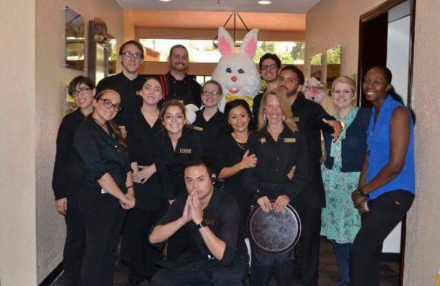
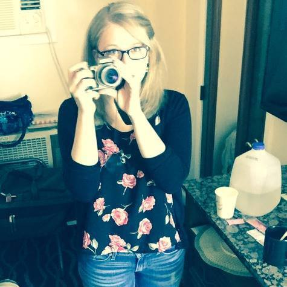
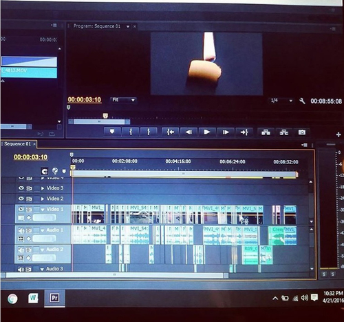
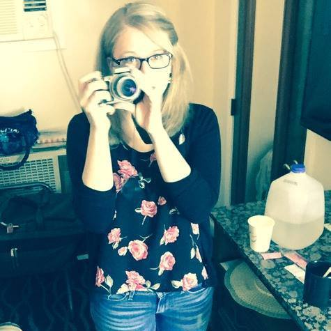
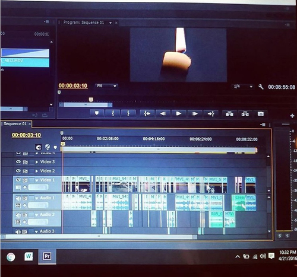

Alissa Murphy
My name is Alissa Cambria Murphy. I am twenty-three, and I currently go to school and work full time. I currently live in Riverside California, and have my entire life, although I would be willing to relocate to Los Angeles if the need arose. I work as a waitress at Canyon Crest Country Club and I am a student at the University of California, Riverside. I intend to achieve a bachelors in Film and Theatre editing and directing by January of 2022. Originally I attended Riverside Community College, where I obtained an Associates Degree in Psychology. Once I had transferred to UCR, I took a bit of time off in order to build up some funds for college as well as support my family. Currently I am paying my own way through school, so I’ve been working as much as possible to maintain my finances. I started working when I was seventeen at Chili’s Mission Bar and Grill while I was finishing highschool, and I eventually moved to Canyon Crest Country Club following a recommendation made by my former manager. Ever since then I have always been employed, including a period of time where I was working two jobs and going to school concurrently. I feel that this taught an important sense of responsibility, given that I need to learn to balance and manage my time effectively. It also taught me the importance of budgeting, and currently I am able to completely support myself financially.
One of my main passions is in Film and Television. I’ve worked on several short films, both collaboratively as well as independently, I have linked a few via my YouTube channel. While my main goal is to enter a career in editing, I also have an interest in directing and writing. Most of the short films that I have worked on I’ve either written or directed, and almost always edited. While I don’t have a large amount of experience in the field of professional film editing, I intended to learn and keep practicing until I can compete at a professional level. Currently I am proficient in both Premier Pro as well as Photoshop. I have worked quite a bit with both of these programs and feel that I could quickly acquire any new skills required in these or other similar programs. I am currently taking computer science classes to further my knowledge of programs such as Excel in order to utilize those programs for film budgets. Many films require thorough research into the cost of things such as props, equipment, and catering, and thus having the ability to organize these expenses is key. I hope that through this I will acquire a variety of skills that will make me more valuable on a film set.
My hope for the future is that I will be able to express my creative side in the world of film, as well as be able to exhibit the responsibility that I have learned through my years of working in customer service. I feel that I have invaluable people skills, including a friendly demeanor, sense of humor, and excellent conflict resolution. I am extremely excited to be able to soon start my career in the world of film, and I know that I will fulfill all expectations and go above and beyond for my dream job.
Experience
Editor
• Edited several short films starting in 2014
• Have worked in multiple group project films as well as independently
• Experience with Premier Pro and Photoshop
• Directed several of the short films that I later edited
Waitress
• Responsible for serving and taking care of customers
• Handling of money and bills
• Manage difficulties with food orders and customer satisfaction
• Closing and locking up the building
Waitress
• Worked to establish relationships with members
• Helped attract new members to join the club
• Trained new staff
• Worked to help recognize and resolve issues with the computer system, including pricing differences, comps, and order relays
Education
UC Riverside
Riverside Community College
Portfolio

.jpg)



